.webp)
THE SWANS - HERBERTS
.webp)
ALISHA THE LEOPARD
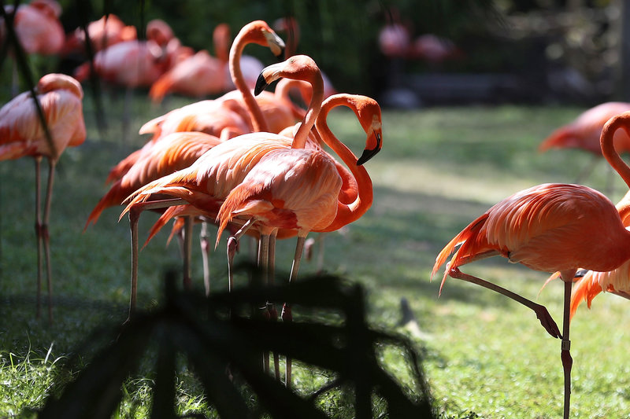
THE FLAMINGOS -THE FLAMBOYANCE
.webp)
DANNY THE CHIMPANZEE
.webp)
BANDU THE ELEPHANT
.webp)
THE LIONS - SIMBA AND NALA
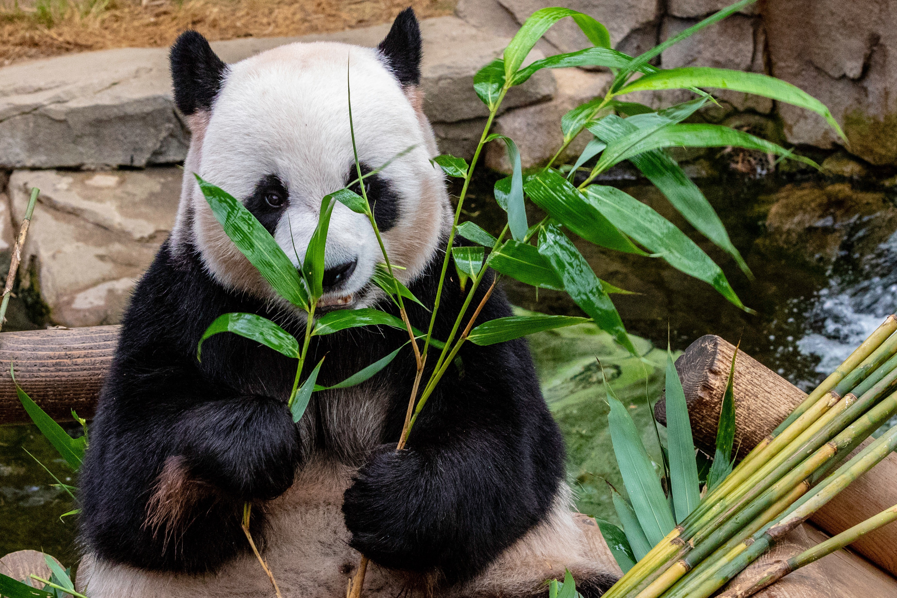
LILY THE PANDA
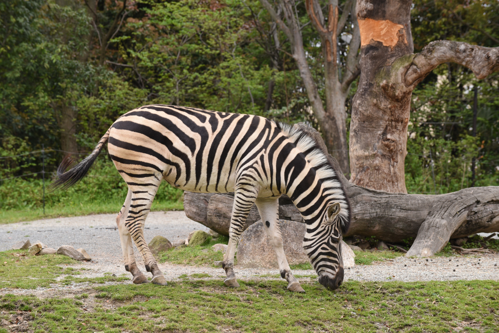
ZANZABAR THE ZEBRA
.webp)
THE GIRAFFES - DOMINICS
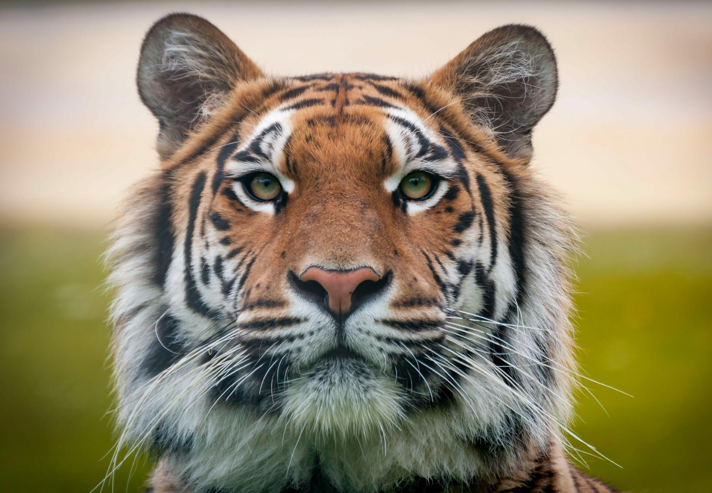
CHRIS THE TIGER
.webp)
PIKO THE KOALA
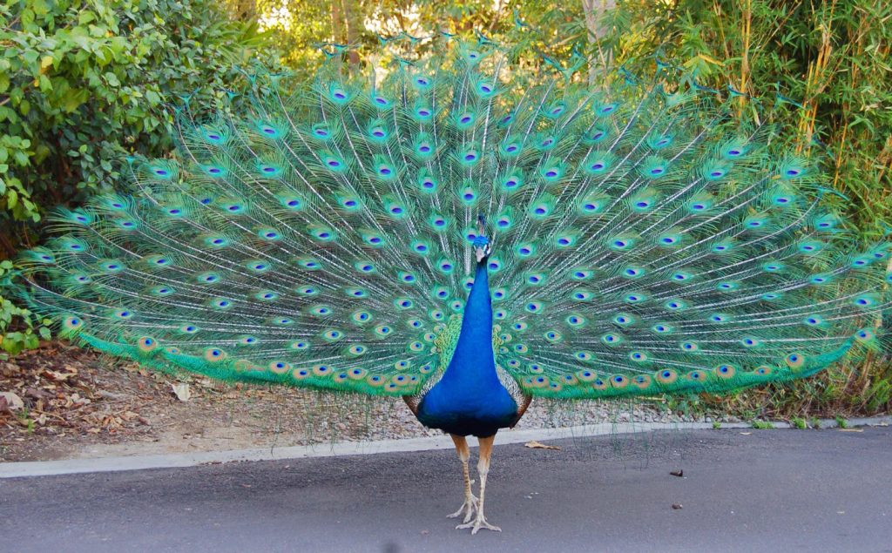
CHARLIE THE PEACOCK
GREEN HOUSES
.webp) 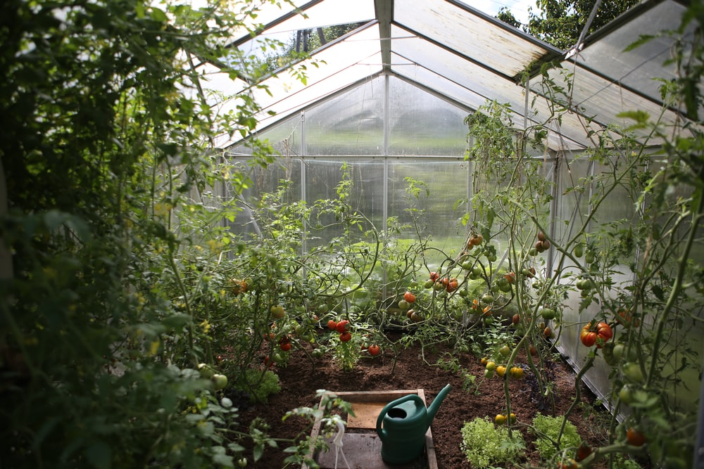
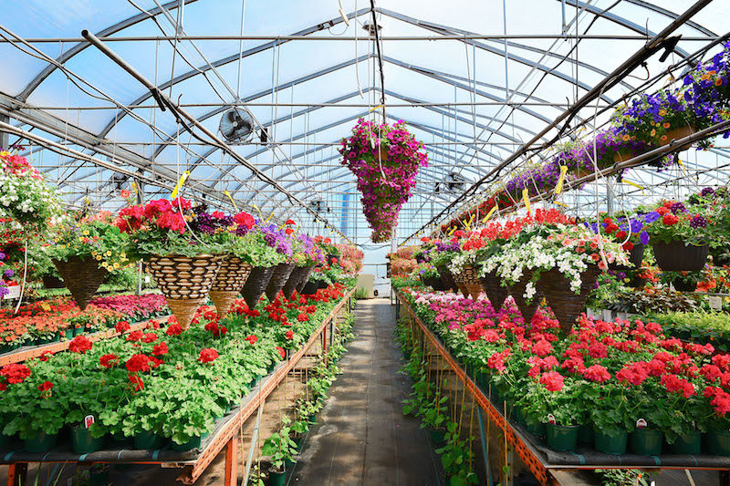
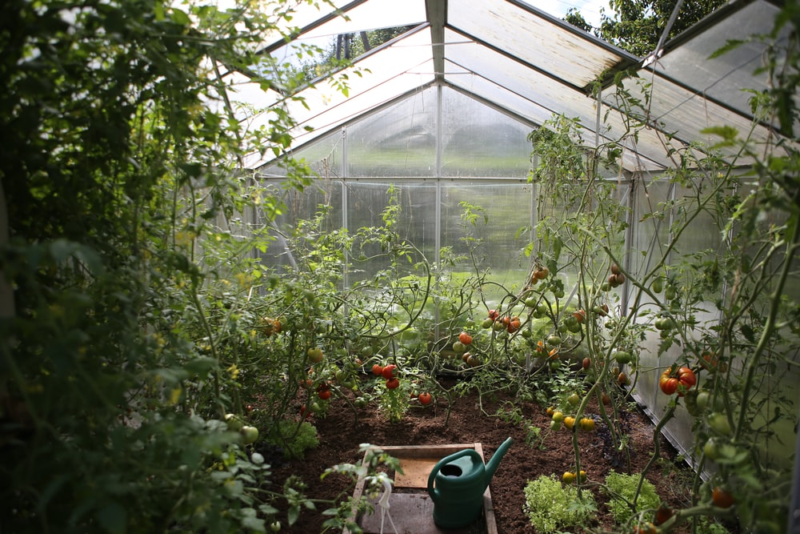
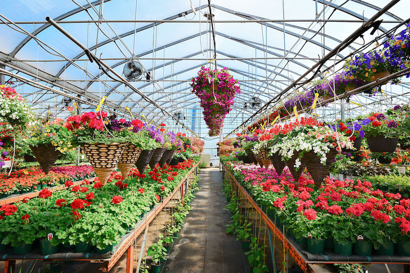
| Name of plant | Plant image | Features |
| Spiraea | 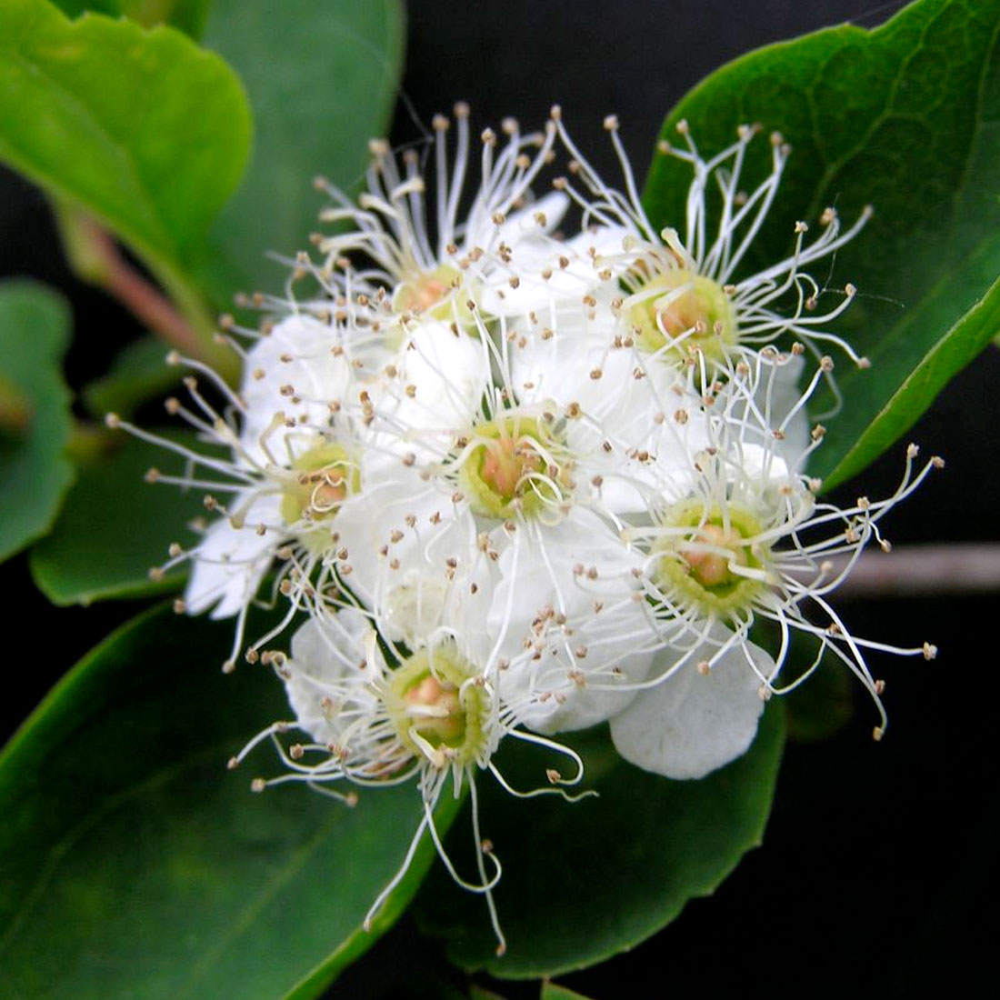 | Spireas are known for their white-pink summer flowers, as well as the color of their spring and fall foliage and their smaller size. This makes them adaptable and valuable additions to Midwest gardens, as well as suitable for urban and suburban settings. Plants from cultivated and wild sources will be introduced to the collection on a regular basis to increase diversity. |
| Geranium | 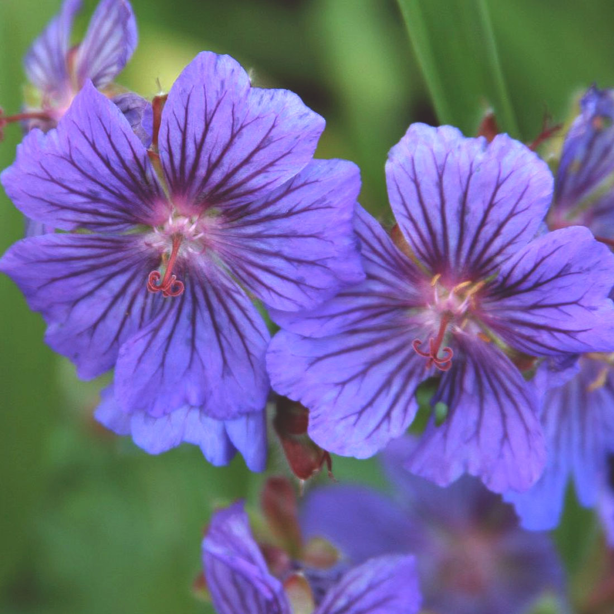 | With the exception of Antarctica, hardy geraniums grow wild in every country on the planet. The perennial forms of the genus, which make up the majority of the species, have a long flowering season, which can be seen here from May to October. There are plants that can grow in the light, the shade, or in a variety of soil conditions. |
| Baptisia | 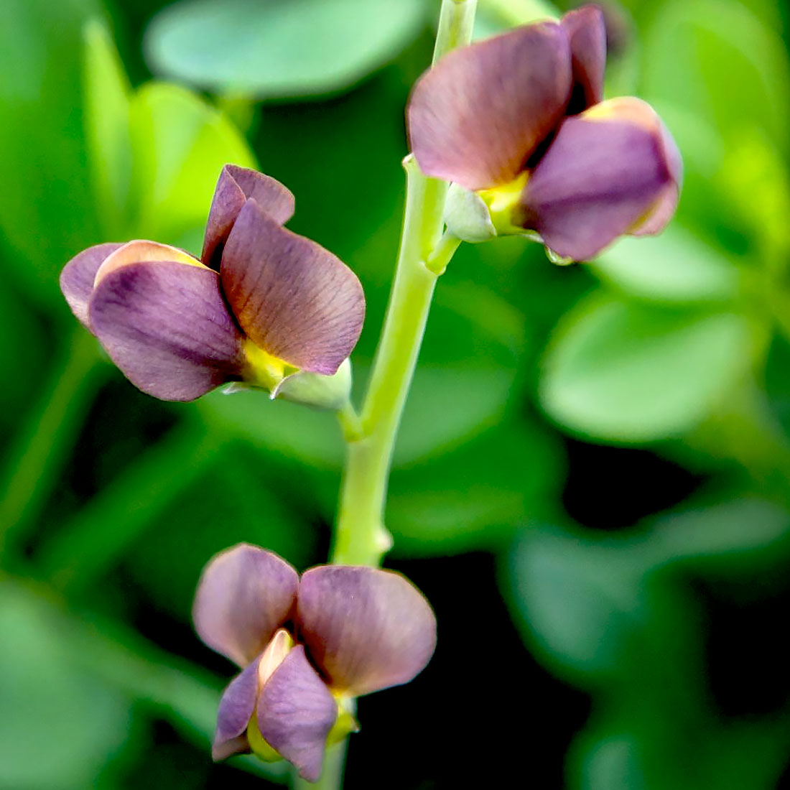 | The Garden's Baptisia range includes both cultivated varieties and wild-collected plants. Throughout the spring and early summer, it blooms in bright blues, purples, yellow, and white. Between Baptisia species, complex hybrids have been produced, resulting in more than 50 cultivars available in the nursery trade. |
| Quercus (Multisite) | 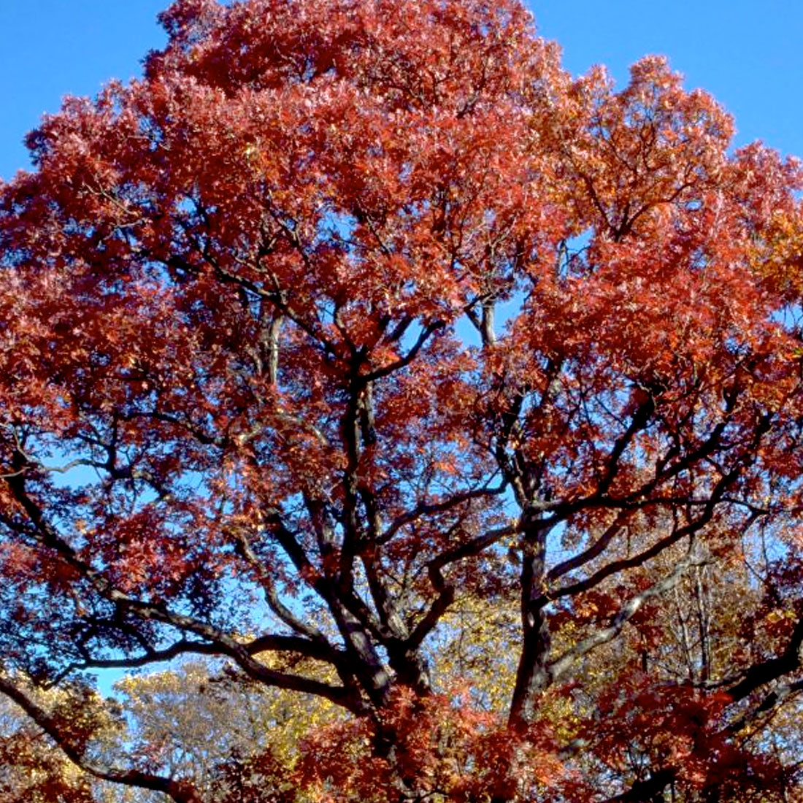 | In recent years, the Botanic Garden collaborated with 20 other institutions across the country to create a multi-institutional Quercus collection. Oaks are a staple of Midwest landscapes, and they work well in both gardens and natural settings. They provide the set of long-lasting, large-scale components that can be passed down over generations. |
| Begonia | 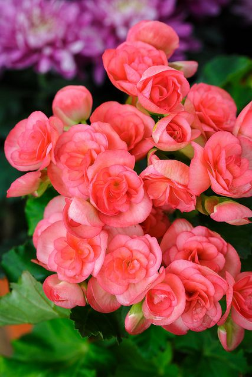 | The majority of varieties 9-11 are cultivated as annuals or houseplants. Plants range in size from 6- to 12-inch houseplants to bushy plants that grow to be 5 feet tall or more. Depending on the variety, it could be in the sun or in the shade. Wax and tuberous begonias are the most common varieties, blooming from early summer to frost. If grown indoors, bloom times can vary, and some varieties bloom all year. |
| Cherry Blossoms | 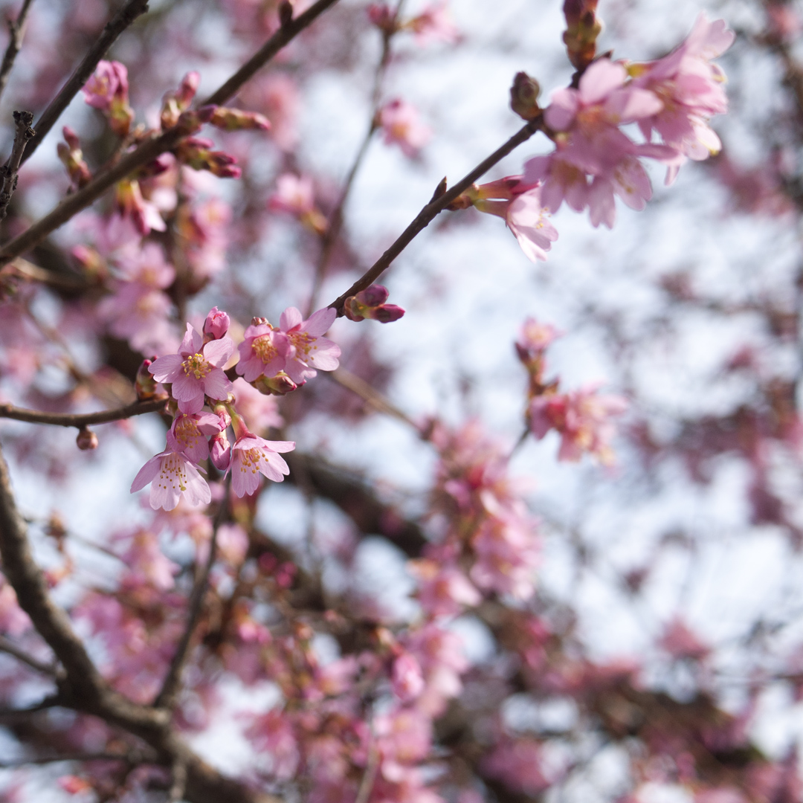 | This beautiful tree which grows about 20-30 feet, blooms from late March to early April. Temperature has a greater influence on bloom time than sunlight or precipitation. The best weather for coaxing early spring blooming is wet, cloudy days. The blossoms often change color, beginning dark pink when in bud, lightening pink when they first bloom, and finally becoming pale pink or white. | Learn more information here. |